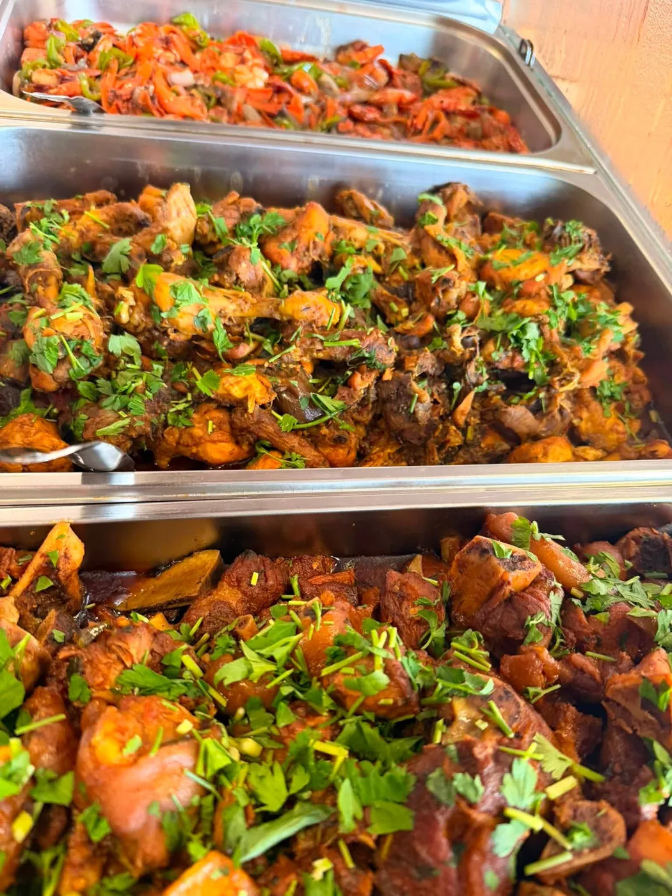
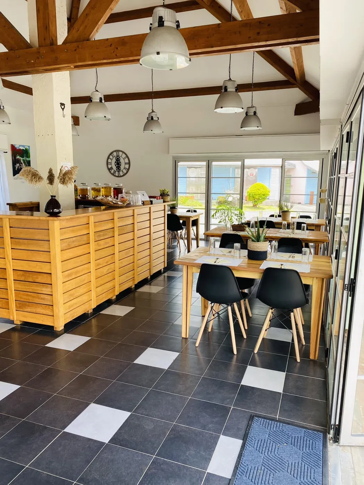
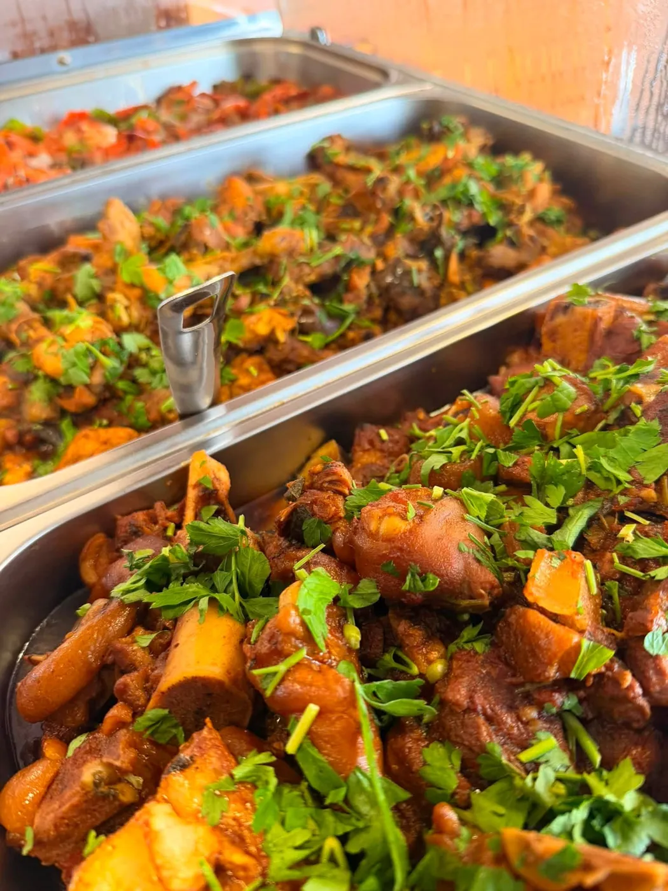
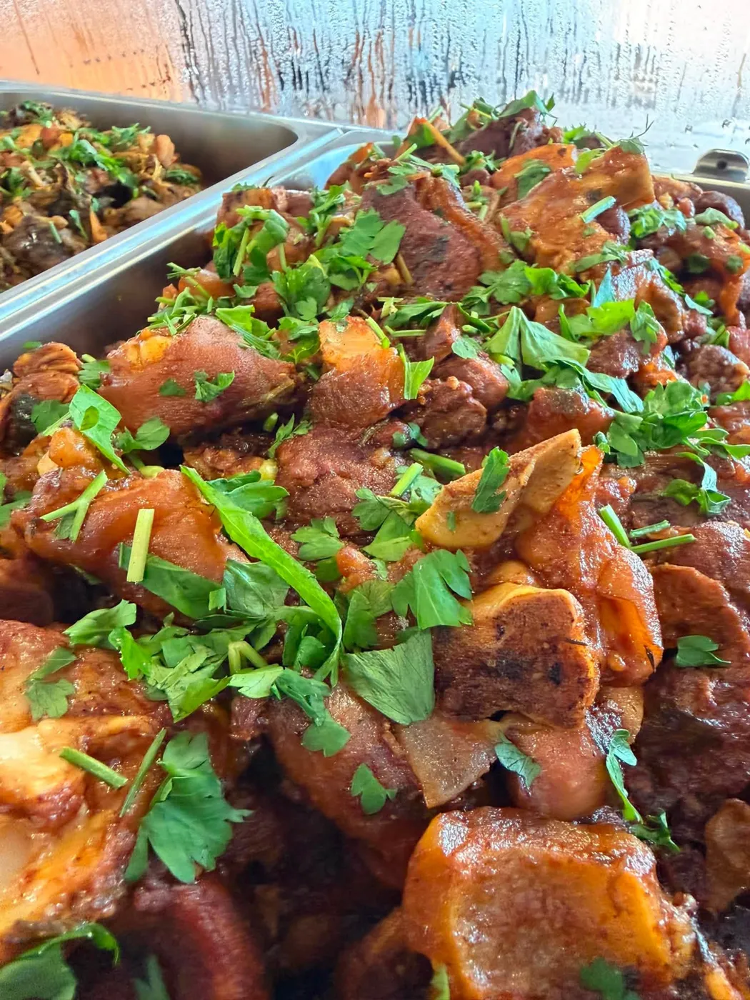
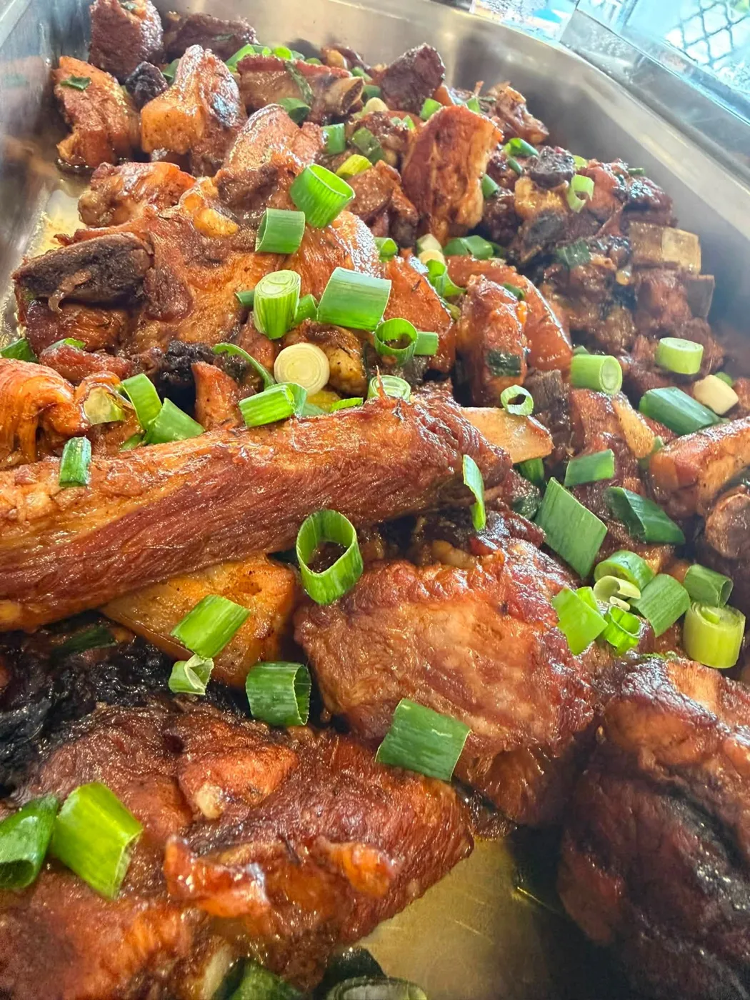
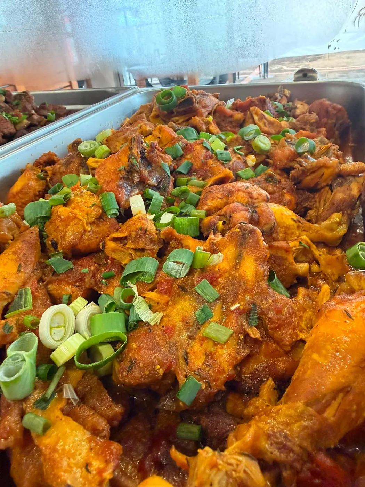
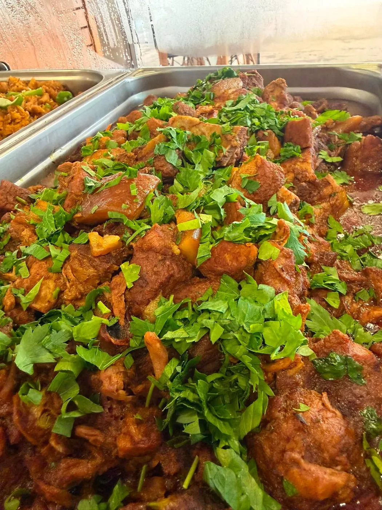

Traiteur · La Plaine-des-Palmistes
La cuisine créole généreuse, mijotée comme à la maison. Au restaurant Les Délices du Domaine ou pour vos fêtes de famille.


Notre maison
Au 260 rue de la République, au cœur de la Plaine, Délices et Traditions vous accueille au restaurant Les Délices du Domaine et prépare aussi vos repas de fête.
Au fil des jours, les marmites se renouvellent : carrys, légumes du pays, cives et herbes fraîches. Une cuisine simple, généreuse, qui sent bon la tradition.
Les marmites
Les plats changent au fil des jours : suivez-les ici et sur notre page, puis réservez votre part.





Traiteur
Anniversaire, repas de famille, événement : on vous prépare un repas à votre image.
Un message ou un appel : le nombre d'invités, la date, vos envies.
Des marmites généreuses, préparées avec soin pour le jour J.
Vous recevez l'esprit libre, vos invités se régalent.
« Accueil agréable, repas parfait. »
Recommandé par 100 % des avis Facebook